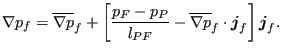

Keyword type: model definition
This option is used to tie two surfaces. It can only be used with 3-dimensionalelements (no plane stress, plane strain, axisymmetric, beam or shellelements). There is one required parameter NAME. Optional parameters are POSITION TOLERANCE, ADJUST, CYCLIC SYMMETRY,MULTISTAGE, FLUID PERIODIC and FLUID CYCLIC. The last four parameters aremutually exclusive. CYCLIC SYMMETRY and MULTISTAGE can only be used forstructures, FLUID PERIODIC and FLUID CYCLIC can only be used for 3D-fluidcalculations. The dependent surface is called the slave surface,the independent surface is the master surface. The user can freelydecide which surface is taken as slave and which as master. Thesurfaces are defined using *SURFACE. Nodes belonging to the dependent surface cannot be used asdependent nodes in other SPC's or MPC's. Only nodes on an axis ofcyclic symmetry can belong to both the slave as well as to the mastersurface.
Default (i.e. in the absense of the CYCLIC SYMMETRY, the MULTISTAGE, the FLUIDPERIODIC and FLUID CYCLICparameter) is a tie of two adjacent surfaces in a structural calculation. This is also called tiedcontact. In that case MPC's are generated connecting the slave nodes with themaster faces, provided the orthogonal distance between the nodes and the adjacent face does notexceed the POSITION TOLERANCE. If no tolerance is specified, or the tolerance is smaller than  , a default tolerance applies equal to
, a default tolerance applies equal to of the typical element size. In addition, the projection of the slavenode onto the master face must lie within this face or at any rate not farther away(measured parallel to the face) thanthe default tolerance just defined. For tied contact the slave surface canbe a nodal or element face surface, whereas the master surface has to consistof element faces. Nodes which are not connected are stored in fileWarnNodeMissMasterIntersect.nam and can be read into CalculiX GraphiX by usingthe command ``read WarnNodeMissMasterIntersect.nam inp''. Nodes which areconnected are automatically adjusted, i.e. the position of the slave nodes ismodified such that they lie exactly on the master surface, unless ADJUST=NOwas specified by the user. In order to createthe MPC's connecting the slave and master side, the latter istriangulated. The triangulation is stored in file TriMasterContactTie.frd andcan be visualized using CalculiX GraphiX.
of the typical element size. In addition, the projection of the slavenode onto the master face must lie within this face or at any rate not farther away(measured parallel to the face) thanthe default tolerance just defined. For tied contact the slave surface canbe a nodal or element face surface, whereas the master surface has to consistof element faces. Nodes which are not connected are stored in fileWarnNodeMissMasterIntersect.nam and can be read into CalculiX GraphiX by usingthe command ``read WarnNodeMissMasterIntersect.nam inp''. Nodes which areconnected are automatically adjusted, i.e. the position of the slave nodes ismodified such that they lie exactly on the master surface, unless ADJUST=NOwas specified by the user. In order to createthe MPC's connecting the slave and master side, the latter istriangulated. The triangulation is stored in file TriMasterContactTie.frd andcan be visualized using CalculiX GraphiX.
The tie can be assigned a name by using the parameter NAME. This name can bereferred to on the *CYCLIC SYMMETRY MODEL card.
The parameter CYCLIC SYMMETRY is used to tie two surfaces bounding one and thesame datum sector in circumferential direction. Both the slave and the mastersurface can be node or face based. For face based surfaces the nodes belongingto the face are identied at the start of the algorithm which generates thecyclic multiple point constraints.For each slave node, a master node is determined whichmatches the slave node within a tolerance specified by the parameterPOSITION TOLERANCE after rotation about the cyclic symmetry axis. The latterrotation is an important aspect: for the purpose of generating cyclic symmetryconstraints distances are measured inradial planes through the cyclic symmetry axis. Circumferential deviations doNOT enter the calculation of this distance. A separate check, however,verifying whether the geometry matches the number of sections defined by theuser, is performed. For details the reader is referred to *CYCLIC SYMMETRY MODEL. If no tolerance is specified, or the tolerance is smaller than , a default tolerance is calculated equal to times the distance of the master nodes to their closestneighbor. Subsequently, a cyclic symmetry constraint is generated. If no master node is found within the tolerance, the face on themaster surface is identified to which the rotated slave node belongs, and amore elaborate multiple point constraint is generated. If noneis found, the closest face is taken. If this face does not lie within
times the distance of the master nodes to their closestneighbor. Subsequently, a cyclic symmetry constraint is generated. If no master node is found within the tolerance, the face on themaster surface is identified to which the rotated slave node belongs, and amore elaborate multiple point constraint is generated. If noneis found, the closest face is taken. If this face does not lie within  of its length from the slave node, no MPC's are generated for this node, an error is issued and the node is stored infile WarnNodeMissCyclicSymmetry.nam. This file can be read into CalculiX GraphiX by usingthe command ``read WarnNodeMissCyclicSymmetry.nam inp''.
of its length from the slave node, no MPC's are generated for this node, an error is issued and the node is stored infile WarnNodeMissCyclicSymmetry.nam. This file can be read into CalculiX GraphiX by usingthe command ``read WarnNodeMissCyclicSymmetry.nam inp''.
The parameter MULTISTAGE is used to tie two coincident nodal surfaces (noface based surfaces allowed) each of whichbelongs to a different datum sector. In that way two axially neighboring datumsectors can be tied. In this case, the order in which the user specifies thesurfaces is not relevant: the surface belonging to the smallest datum sectoris taken as master surface. The larger datum sector should not extend thesmaller datum sector by more than once the smaller datum sector, no matter inwhat circumferential direction (clockwise or counterclockwise). This optionshould not be used in the presence of network elements.
The parameter FLUID PERIODIC is used to define periodic conditions in 3D-fluidcalculations on surfaceswhich are translated w.r.t. each other. The surfaces must be face-based and match. Forcyclic conditions in 3D-fluid calculations on surfaces which are rotatedw.r.t. each other the parameter FLUID CYCLIC isused. Here too, the surfaces must be face-based and match. Both parameters require the*CYCLIC SYMMETRY MODEL card to be effective. For 3D-fluid applications it isrecommended that at least three element rows separate the master and the slave surface.
The parameter NAME is needed if more than one *TIE constraint is defined. Itallows the user to distinguish the tie constraints when referring to them inother keyword cards (e.g. *CYCLIC SYMMETRY MODEL).
Notice that *TIE can only be used to tie ONE slave surface with ONE mastersurface. It is not allowed to enter more than one line underneath the *TIEcard. Furthermore, *TIE cards must not use a name which has already been usedfor another *TIE.
First line:
Following line:
Example: *TIE,POSITION TOLERANCE=0.01 left,right
defines a datum sector with slave surface left and master surfaceright, and defines a position tolerance of 0.01 length units.
Example files: segment, fullseg, couette1per, couettecyl4.